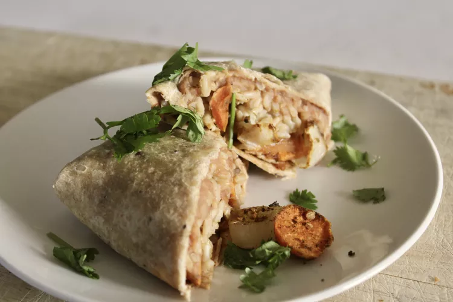

Vegan Sweet Potato and Bean Burritos

Description:
These flavorful and filling burritos are satisfying and vegan, too! Perfect as-is or topped with guacamole or your favorite sauce. Try switching out the refried beans for black beans and corn for a fun twist!
Ingredients:
- 1 cup sweet potato, peeled and cut into 1/4-inch cubes
- 1/2 cup yellow onion, sliced
- 2 tablespoons olive oil
- 1 tablespoon taco seasoning mix
- 1/2 cup vegan refried beans
- 4 large vegan tortillas
- 1 cup cooked brown rice
- 1/4 cup salsa
Steps:
- Preheat the oven to 450 degrees F (230 degrees C).
- Toss sweet potatoes, onion, olive oil, and taco seasoning together in a bowl. Spread out onto a baking sheet.
- Roast in the preheated oven, about 30 minutes or until desired level of doneness.
- Spread 1/4 of the beans down the center of each tortilla. Top each tortilla with 1/4 cup rice, 1/4 of the vegetable mixture, and 1 tablespoon salsa.